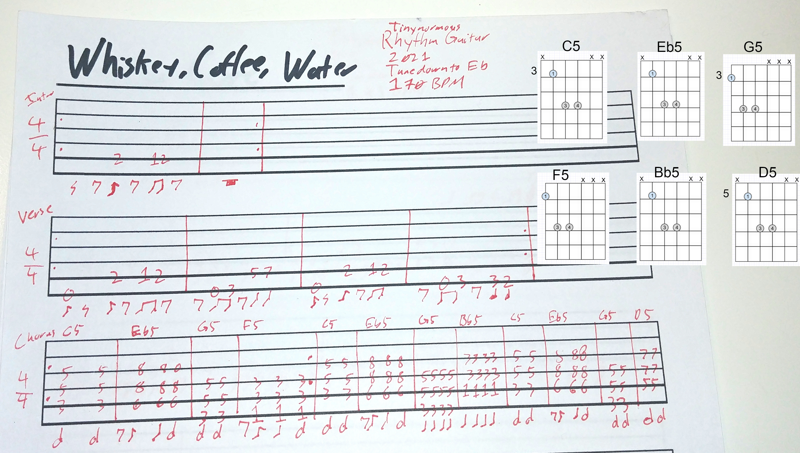
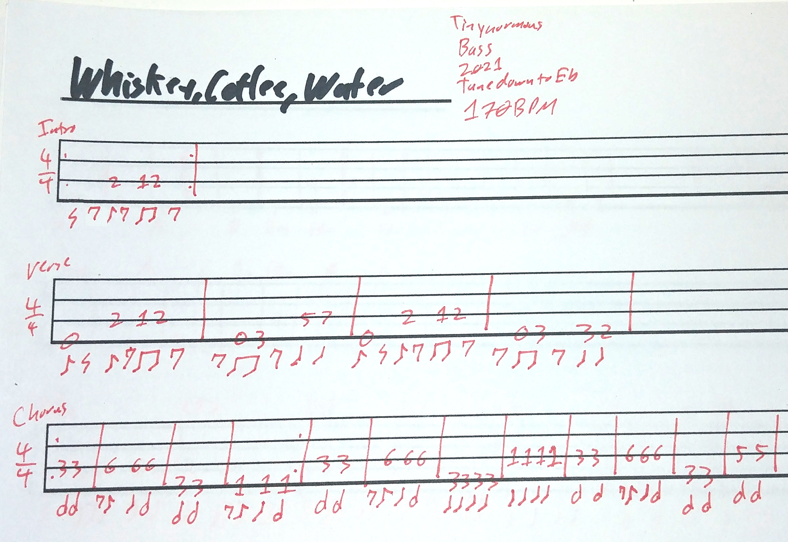
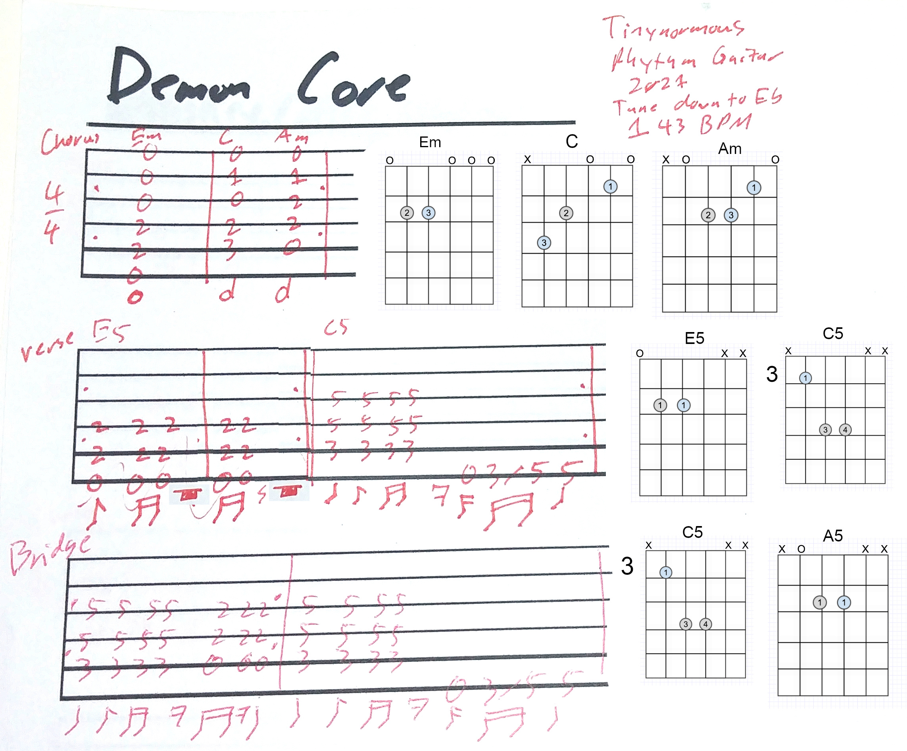
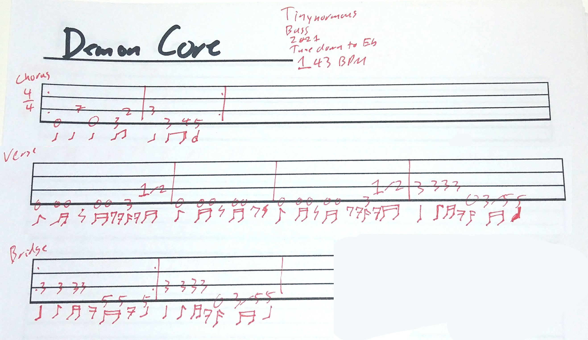

Song 1: Whiskey, Coffee, Water
About
Structure:
- Intro (verse riff 2x guitar only, 2x with bass/rGuitar tease)
- verse 1 (8x, half time feel)
- chorus
- preVerse (verse riff 4x, new feel)
- verse 2 (8x)
- chorus
- preVerse (verse riff 4x, double time)
- verse 3 (8x)
- outro (verse riff 4x, rGuitar/bass call/response, half time)
- outro (verse riff 4x, rGuitar/bass full riff, toms)
Guitar Charts

Bass Charts

Song 2: Bright Crowns
About
Structure:
- intro (4 bars drums only 12/8)
- intro riff 1 (2x, slow build)
- intro riff 2
- intro riff 3
- chorus riff (guitar only)
- chorus riff (full band)
- verse1 (riff 8x)
- bridge
- chorus
- verse2 (variation A 4x, variation B 4x, variation C 4x)
- bridge
- chorus
- breakdown( double time, 2x no vox, 2x w/ vox, 2x, w/ guitar lead)
- bridge
- chorus
Song 3: Demon Core
About
- tune down to Eb
- the breakdown is a slow build
Structure:
- main riff 1x (guitar only)
- main riff 1x (guitars)
- main riff 2x (full band)
- preVerse (1/2 of verse w/ abrupt stop, quiet)
- verse 1 (verse riff 2x, quiet)
- main riff 2x (full band, louder)
- preVerse (1/2 of verse w/ abrupt stop, loud)
- verse 2 (verse riff 2x, quiet)
- main riff 2x (full band, louder)
- preVerse (1/2 of verse w/ abrupt stop, loud)
- break down (1st part of verse verse riff 16x, slow build, start quiet)
- verse 3a (verse riff 2x, quiet)
- verse 3b (verse riff 2x, loud, end with bridge)
- main riff 2x (loud)
Guitar Charts

Bass Charts
